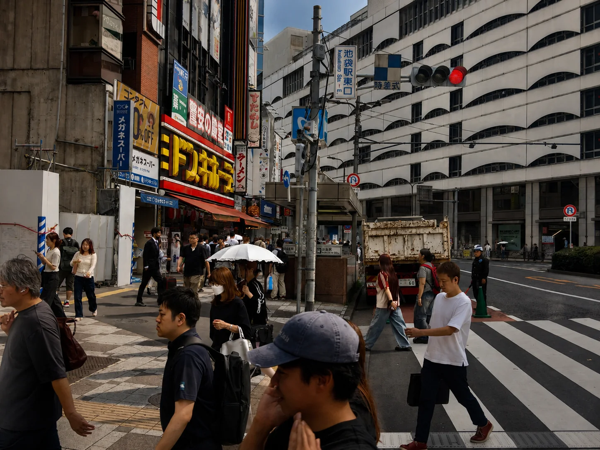
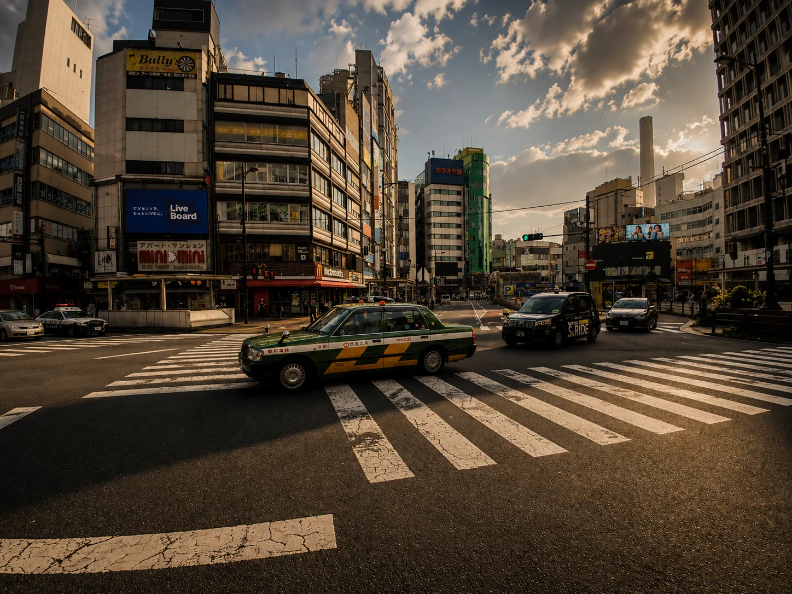
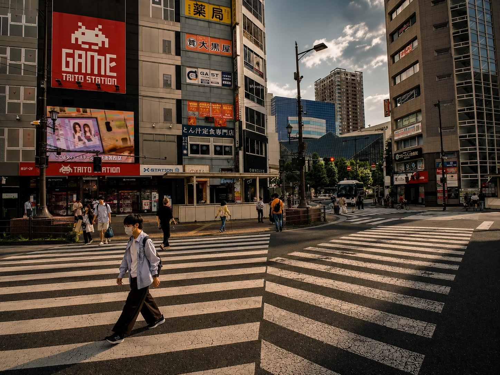
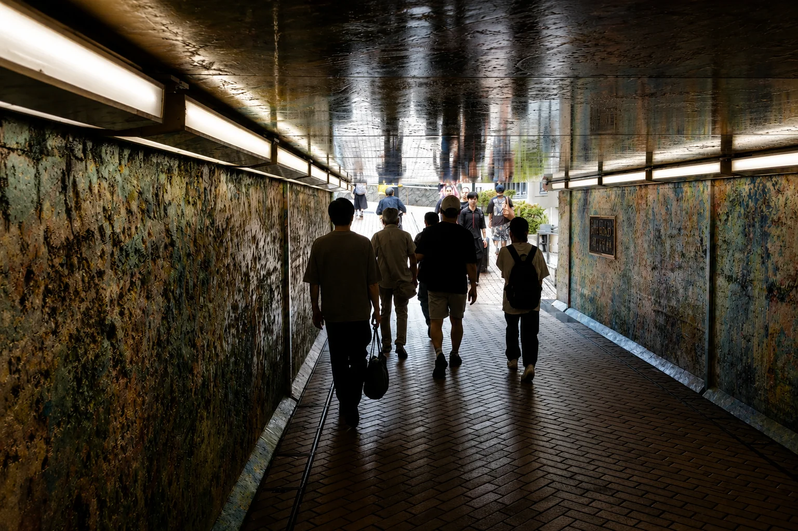
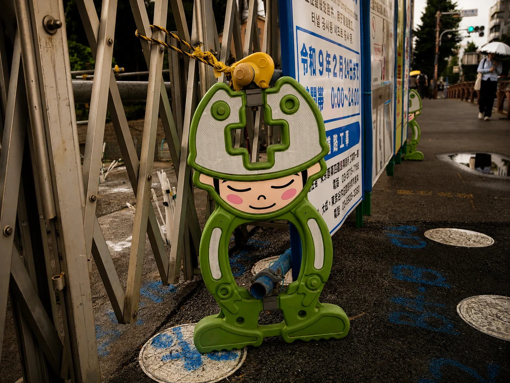
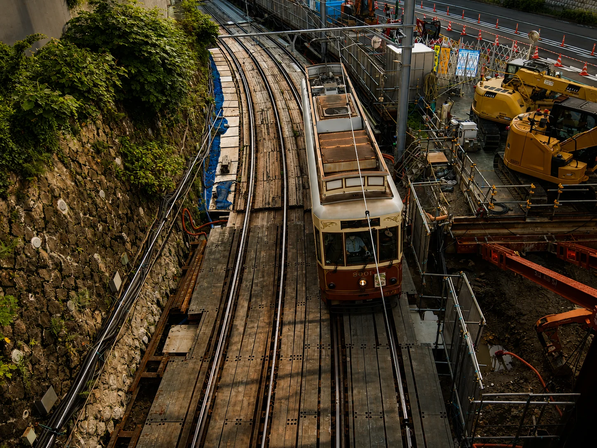
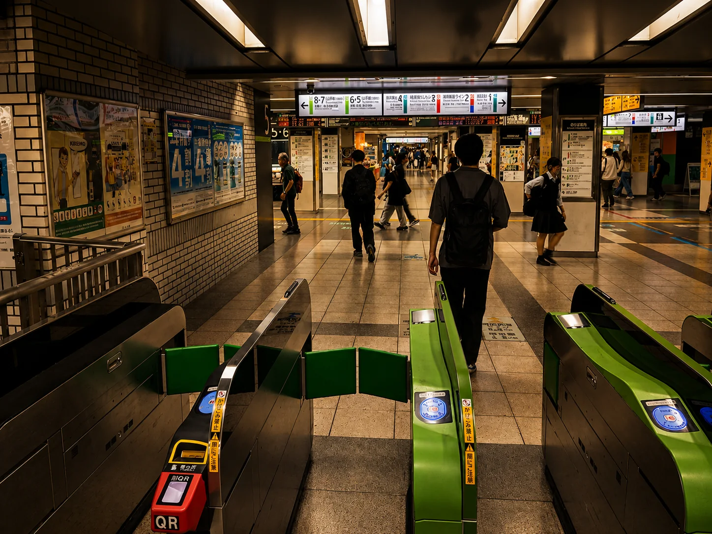

Clean on the Surface
Tokyo’s immaculately clean streets and perfect manners make everything seem picture-perfect. This story looks at the realities swept out of sight, but never really out of mind.
Read the storyAugust Issue · Tokyo: Perfectly Polite and Fanatically Clean… on the Surface
Photography · What’s Really Going On · Tokyo Life

Cover Story · Photo Essay
Tokyo always seems ready for inspection day: white-glove clean, perfectly polite, and hypervigilant about appearances. But what’s underneath all that?
Read the cover storyEditor’s Note
Eastokyo is an independent magazine about the Tokyo they don’t show tourists. There are really three versions of the city: the one people fantasize about, full of anime, ninjas, cherry blossoms, and geishas pouring tea; the one people silently endure as they push through crowds and work themselves beyond exhaustion; and the darker Tokyo you’re not even supposed to mention at all.
This magazine gets into discrimination against foreigners, extreme overwork, crushing loneliness, sex, belonging, social pressure, appearances, and the rules that keep everyone in check… especially when those rules are one-sided.
This issue’s lead stories
Real stories about the messy parts of Tokyo life hidden behind perfect manners and a spotless surface.

Tokyo’s immaculately clean streets and perfect manners make everything seem picture-perfect. This story looks at the realities swept out of sight, but never really out of mind.
Read the story
Tokyo needs foreign workers, but needing people and accepting them are not the same.
Read the story
Tokyo has been called the loneliest city in the world. For a metropolis of roughly 33.4 to 37 million people, ranking as the third most populous urban area on the planet, that’s one hell of a contradiction.
Read the storyThe rest of the issue
Conformity as a social identity, workplace obedience, the myth of the submissive Japanese woman, and the exhausting performance of keeping everything looking absolutely perfect.
Although tourists from other countries, who bring more than US$50 billion to Japan every year, are welcomed with open arms, the foreigners who build lives here are never fully embraced.
Read the story →
In Tokyo, the only thing that matters more than productivity is appearances. That’s why working until you’re exhausted and never leaving before the boss is only half the fun.
Read the story →Here in Tokyo, honesty is usually not the best policy, especially at work, where the long-established nationwide motto is: “The nail that sticks out gets hammered down.”
Read the story →
Westerners have always been told that Japanese women are geisha types: quiet, soft-spoken, shy, and deferential. Yeah, that’s not how it is. In reality, most hold all the spades in relationships, families, and Japanese society.
Read the story →No. 01 · 2026
What Eastokyo actually covers
01
The insiders and outsiders trying to survive a megacity that never slows down long enough to give a damn.
02
The social rules and hierarchies that quietly decide who gets to eat and who gets hammered down.
03
The Mommie Dearest-level obsession with keeping up a perfect social image, shoving everything else under the couch, and absolutely no more wire hangers.

About our magazine
Eastokyo is an independent magazine that talks about the things nobody else has the audacity to say. We deal with the real pressures people in Tokyo go through, from being packed into trains like sardines by station workers to the touchy subjects everyone says are too impolite to bring up. They’d love to shut us up. Too bad we still have a voice.
The photography comes from the streets of Tokyo. The stories come from staying long enough to see through the bullshit.